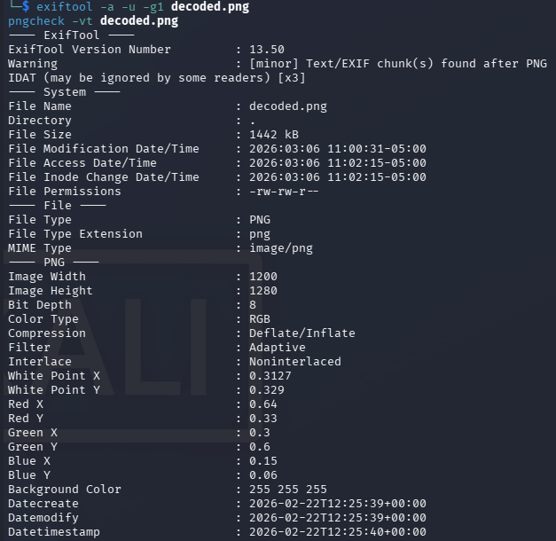
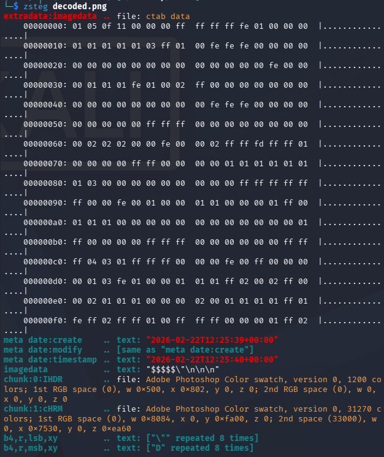
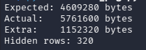

CryptoNite CTF 2026 - Mustard and Mangoes (Steganography)
Challenge Overview
- Name of the CTF Event: CryptoNite CTF 2026
- Challenge Name: Mustard and Mangoes
- Category: Forensics / Steganography
- Points earned: 200
- Description: A friend of mine recently suffered the 6-7 mango dream and scribbled a lot of 6’s and 7’s. But even when I pictured what he wanted to say, something seemed incomplete. Almost left out on purpose.
- Provided Files / URL: Mangoes_and_Mustard.txt
- Flag Format:
TACHYON{...}
Goal
The objective was to recover the flag in the format TACHYON{...} from the provided challenge file.
Initial Analysis
I will preface this with me never having done a steganography CTF before, so a lot here I had to look up to find out how to best tackle it, even if it might not come across like that in the solution description.
The first thing I did of course was to open the provided text file. It was relatively big for a text file at around 11 MB. As for the content, it consists entirely of the digits 6 and 7. No other characters are present — no spaces, no newlines, no letters.
Not having any idea what to do, I looked up what typical steganography CTF tend to do. Turns out, it’s hiding data in files, though usually not in a way you would expect it to.
Eventually, I came to the correct conclusion that the 6 and 7 are a binary encoding:
-
6->0 -
7->1
The description also uses the workd picture, a common file to use in steganography.
Tools used during reconnaissance
The following tools were used during the investigation:
stringsgrepxxdexiftoolpngcheckzstegbinwalk- Python scripts for decoding and PNG parsing
Solution Path
Step 1: Decode the 6/7 stream into a binary file
I replaced every 6 with 0 and every 7 with 1, split the resulting bitstring into 8-bit chunks, and wrote the raw bytes to a file:
with open('Mangoes_and_Mustard.txt', 'r') as f:
data = f.read().strip()
binary = data.replace('6', '0').replace('7', '1')
n_bytes = len(binary) // 8
byte_data = bytes(int(binary[i:i+8], 2) for i in range(0, n_bytes * 8, 8))
with open('decoded.png', 'wb') as f:
f.write(byte_data)
The output begins with the bytes 89 50 4E 47 0D 0A 1A 0A — a proper PNG signature. Opening it shows the Manhattan skyline at night. No flag is visible anywhere in the image.

Step 2: Investigate the PNG
I couldn’t find anything on the image, so I decided to check if there is anything inside.
Metadata checks
I examined the metadata:
exiftool -a -u -g1 decoded.png
pngcheck -vt decoded.png
- the PNG structure was valid
- there were
tEXtchunks afterIDAT - the text chunks only contained timestamps:
date:createdate:modifydate:timestamp
This didn’t seem very useful to me. No flag appeared in metadata.

Check for appended data after IEND
I found out online that a common PNG trick is to append hidden payload after the IEND chunk. I verified the end of the file manually:
xxd decoded.png | tail -50
This showed the expected PNG ending:
49 45 4E 44 AE 42 60 82
and nothing after it. So there was no appended payload.
Extract printable strings
I also tried to search for obvious text:
strings decoded.png | grep -i tachyon
strings -t x decoded.png > strings.txt
This didn’t show anything useful either.
Step 3: Try automated PNG steganography checks with zsteg
I saw online that zsteg is a very powerful tool for steganography, so I tried to use that.
zsteg decoded.png
The output contained a few weak-looking results, for example:
- repeated
"characters - repeated
Dcharacters - timestamp metadata
- some heuristic “file” identifications that did not look convincing

I tried various other commands with zsteg and also other tools such as binwalk but in the end only wasted a lot of time, these produced mostly noise and false positives.
Step 4: Re-read the challenge description carefully
I went back to the description:
*“But even when I pictured what he wanted to say, something seemed incomplete*. Almost left out on purpose.”*
So instead of something being in the image, this suggests that something is missing from the image.
A PNG file consists of chunks:
IHDRIDATIEND
Important facts:
- IHDR contains image width and height
- IDAT contains compressed pixel data
- Viewers only display rows defined in IHDR
If extra pixel rows exist in IDAT, they will not be displayed if the IHDR height is smaller.
Step 5: Checking the Pixel Data
Using a python script I extracted, decompressed the IDAT data, and compared its size to what the IHDR dimensions would require.
Result:
1600 rows
But the IHDR chunk said:
height = 1280

There are 320 extra rows of pixel data that no viewer will render because the IHDR says the image is only 1280 pixels tall.
Step 6: Patch the PNG height and recalculate the IHDR CRC
The solution was to modify the IHDR height field so that the full image renders.
Steps:
- Replace height
1280with1600 - Recalculate the IHDR CRC
- Save the new PNG
After patching the header and opening the image again, the bottom portion of the image became visible, which contained the flag:

Conclusion
This challenge combined two types of encoding. The first one was a binary substitution (6 -> 0, 7 -> 1) that created a proper PNG file. The second one was an IHDR height manipulation. The image header was modified to define fewer rows than the compressed pixel stream actually had, making the bottom part invisible to any standard viewer.
Tips
- A valid image can still be incomplete if the header dimensions are wrong
- PNG chunk analysis is an important forensic skill
-
zsteg,binwalk, andfileare useful, but they can produce false positives - Metadata information in a file can be wrong